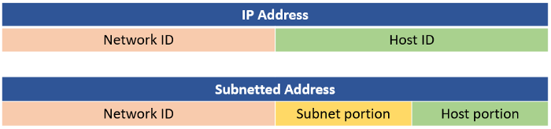
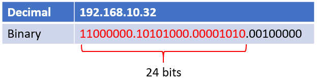
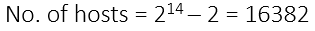
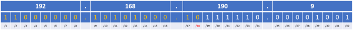
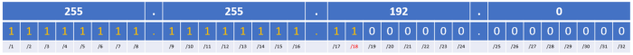
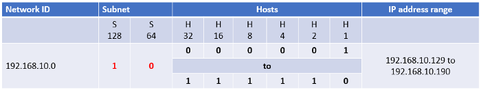

Learning Subnetting (Simplified)
I have been studying networking for my IT course and there is this particular topic that I always forget how to do, although I know the concept. I just kept looking back at my notes and other online resources, so I have finally decided to just write a blog solely for this topic. Combining all my resources and notes to refresh my mind once again.
So this blog is for those who want to learn how subnetting works step-by-step or if you are just like me who needs a refresher every once in a while.
However, I do want to assume that you already know classes of IP addresses, what is subnet mask for and what is a network ID.
Learning Objectives of this blog:
- Understand the concept of subnetting
- How to read CIDR notation
- Determine the number of hosts and network ID upon reading the IP CIDR notation
- Determine range of hosts and the broadcast IP address of an IP subnet
What is subnetting?
Subnetting is dividing a network into two or smaller networks. This divided networks are called subnets. The purpose of subnetting is to enhance security, increase routing efficiency and to reduce the size of the broadcast domain¹.
I am not going to dive deep into the benefits of subnetting, but you can find it here.
How do we subnet?
To subnet, we divide an IP network address’ host portion into two parts. Meaning, we borrow bits from the host bits of an IP address and use it as our subnet bits. We can borrow a number of bits depending on how many subnets we need.
Let me give you an example, lets say you have an IP address and the network ID is 192.168.1.0. You want to divide this into 6 different networks.
So you will need to borrow 3 bits from the 8 host bits to fit your 6 different subnets. The formula for this is:
No. of subnets = 2subnet bitsWhat is CIDR?
CIDR stands for Classless Inter-Domain Routing. This is also knows as classless or prefix-based addressing. This was implemented to solve the problems posed with Class-based addressing.
Classful system of allocating IP addresses is wasteful. Anyone who needs slightly more than 254 hosts addresses will be given class B address block of 65533 host addresses.
So CIDR was developed to eliminate the traditional concept of Class A, B and C network addresses and that enables efficient allocation of IP address space as it assign address space based on needs.
Explained more in RFC 1517–1520.
CIDR Address Notation:
So you may have come across an IP address that looks like this: 192.168.190.9/18 or subnet masks that looks like this: 255.255.192.0. Totally different from your usual subnet mask of 255.255.255.0.
You know how your IP address is presented in 32 bits? Well the “/18” states that 18 bits of that address is your network part. Which means 14 bits are left for host addresses.
Hence you can also calculate number of hosts:
No. of host bits left = 32 — subnet bits
No. of hosts = 2( no. of host bits left ) — 2For example, the common IP address you will probably see in your internal network is 192.168.10.32/24. This means 24 bits were used for the network part of the address and the remaining 8 will be your host bits.
Hope the photo above helps you better visualize how this notation works.
Lets try another one. We have an IP address of 192.168.190.9/18. Lets find number of hosts, network ID and subnet.
“/18” states that 18 bits are used for network part. Hence, 14 bits are left for host bit.
For network ID, you just need to add up all the 18 bits and this should give you a network ID of 192.168.128.0
As for determining the subnet, all ones of 18 bits should do the trick.
Keep in mind that this method is to only help you visualize and understand CIDR better. If you are looking for a method that will help you with subnetting fast be sure to watch Professor Messer’s video on Seven Second Subnetting Process.
IP subnet’s Range of Hosts and Broadcast IP address.
Let use the IP address 192.168.10.32/24 as an example. Lets say we we needed 3 subnetworks, so we borrowed 2 bits from the remaining host bits. We then derived our first subnet to be 192.168.10.128. Now we need to know how to find the range of hosts in that subnetwork as well as its Broadcast IP address.
You can use the diagram to help you visualize:
Since the 2 bits that we borrowed are now part of the network ID, we are just left with 6 bits for the hosts. Remember that range of hosts does not include all 000000 and all 111111. Hence, our range will only be 000001 to 111110.
So for the subnet 192.168.10.128/26 it has range of Host IPs from 192.168.10.129 to 192.168.10.190.
Our Broadcast IP address should be obvious by now, as it is always the last IP address of the subnet: 192.168.10.191
Any feedback or constructive criticism is welcomed! You can find me on my twitter @moveax_nic, LinkedIn @nicoleaponce or my YouTube channel!
[1]: Subnetting Explained. Retrieved from Study-CCNA: https://study-ccna.com/subnetting-explained/
May 17, 2020